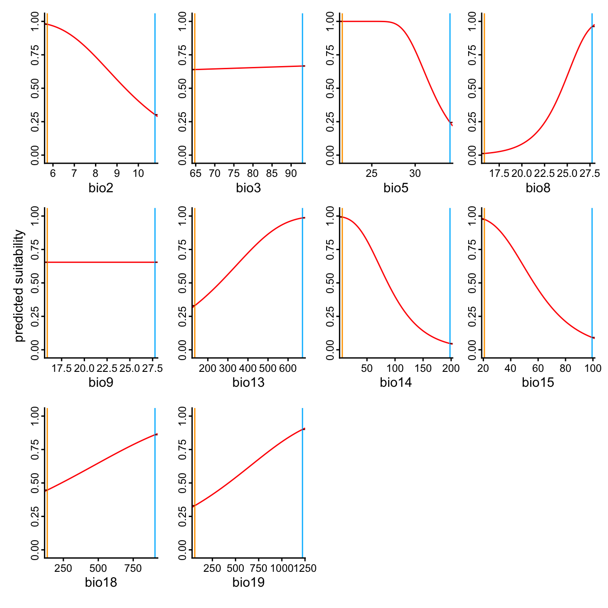
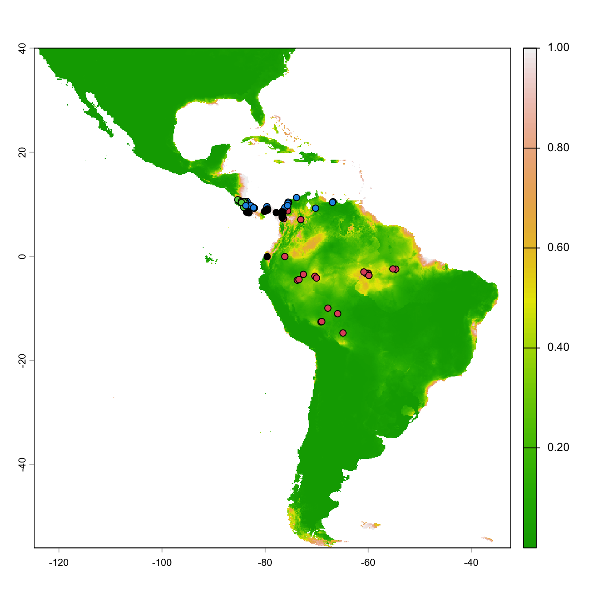
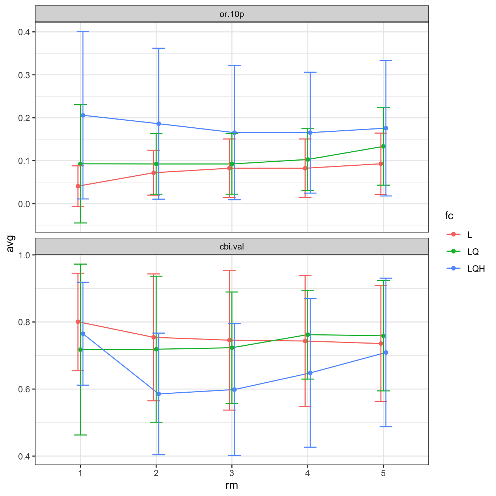
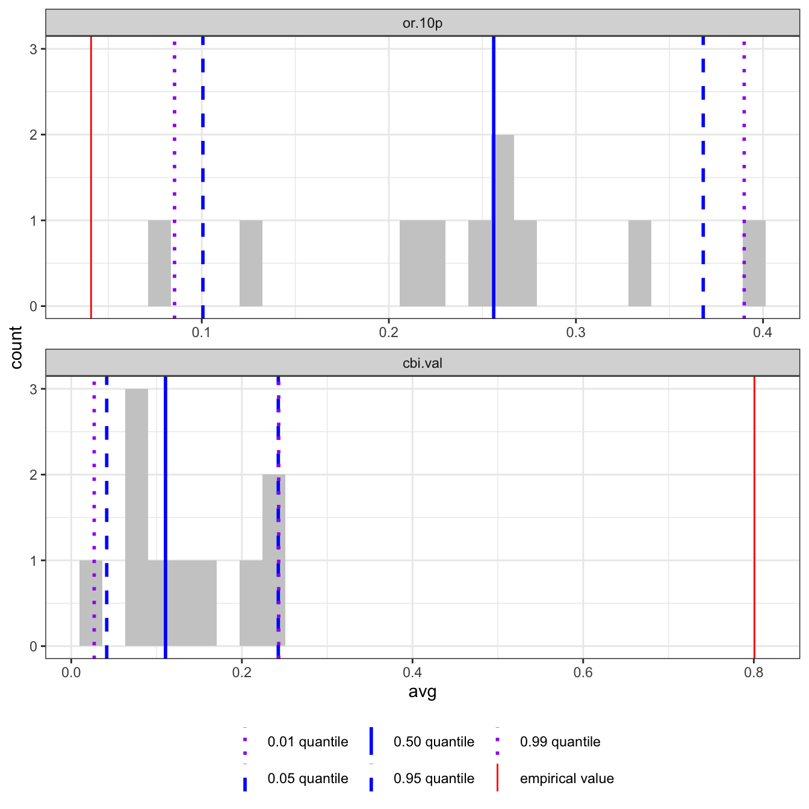

install.packages(c("targets", "geotargets"))ENMeval 2.0 チュートリアル(targets 版)
同じ解析を {targets} のパイプラインにして、再現しやすく、やり直しやすくする
ノートこのページについて
前提:スクリプト版チュートリアルを、先に最後まで実行してあること。 このページは、そこで 1 つずつ確かめた解析のうち、最終的な結果を得るのに必要な部分だけ を、 R パッケージ targets の パイプライン として書き直したものです。 データの確認や、分割方法の比較、モデルの複雑さの比較など、「調べるための」コードは含めていません。
targetsそのものの詳しい説明は、このページの範囲外です。必要な最小限の使い方だけを説明し、 詳しく学べる資料は 参考資料 にまとめました。- 関数名・オブジェクト名・設定値は、スクリプト版と同じにしてあります。
1 targets を使う理由
スクリプト版では、コードを上から順に実行しました。 これは、考えながら解析を進めるときには便利ですが、解析が大きくなると、次のような困りごとが出てきます。
- どのコードを、どの順番で実行すればよいか分からなくなる。
- 設定を 1 つ変えただけなのに、全部をやり直す(時間のかかる
ENMevaluate()も含めて)。 - 前回の結果が、今のコードで作られたものなのか分からなくなる。
targets では、解析を 関数 に分け、「どの結果が、どの結果から作られるか」を パイプライン として書いておきます。 tar_make() を実行すると、targets が 変更があった部分と、それに依存する部分だけ を実行し、 結果を _targets/ フォルダに保存します。 同じ解析を複数の種に当てはめるときにも、そのまま使えます。
2 準備
2.1 パッケージ
スクリプト版で入れたパッケージに加えて、targets と、地図(ラスター)データを扱うための拡張 geotargets を入れます。
2.2 プロジェクトのフォルダ
targets は、1 つの解析につき 1 つのフォルダ(プロジェクト) を使います。 スクリプト版の RStudio プロジェクトの作り方と同じ手順で、 新しいプロジェクト(たとえば my-enm)を作り、次のようなフォルダ構成にします。
my-enm/
├── _targets.R # パイプライン(「何を、どの順で作るか」)
├── R/
│ └── functions.R # 解析の各ステップを関数にしたもの
├── data/ # ダウンロードしたデータ(スクリプト版の data/ と同じ)
└── _targets/ # targets が自動で作る。結果の保存場所(手で触らない)スクリプト版を実行したフォルダの data/ を、そのままコピーして置くと、GBIF と WorldClim の再ダウンロードを省けます。
ノートこのページのコードについて
このページでは、R/functions.R と _targets.R の 2 つのファイルを、少しずつ見せていきます。 表示されているコードを、順番にそれぞれのファイルへ貼りつければ、完成します。 このページの結果は、同じコードを、使い捨ての一時フォルダのなかで実際に実行して得たものです。
3 解析を関数にする(R/functions.R)
スクリプト版の各ステップを、関数 にします。 targets の基本的な考え方は、「関数が 1 つのステップを担い、その結果が 1 つのターゲット(target)になる」です。
関数にするときの変更は、おもに次の 3 点です。
- 必要なものは 引数 で受け取り、結果は 返り値 で返す(グローバルな変数に頼らない)。
ENMeval::ENMevaluate()のように、パッケージ名::をつける(どのパッケージの関数か分かる)。- 図を描くコード(確認用)は、関数に含めない。
以降のチャンクは、すべて R/functions.R に この順番で 続けて書きます。
3.1 データの取得
スクリプト版の「ファイルがなければダウンロード」をそのまま使います。 返り値を ファイルのパス にするのは、あとで説明する「ファイルのターゲット」にするためです。
# 出現記録を GBIF からダウンロードして保存する(すでにあれば何もしない)。
# 返り値は、保存したファイルのパス。
download_occs <- function(occs_file, species = "Bradypus variegatus", limit = 300) {
if (!file.exists(occs_file)) {
dir.create(dirname(occs_file), showWarnings = FALSE, recursive = TRUE)
gbif_out <- rgbif::occ_data(scientificName = species,
hasCoordinate = TRUE, limit = limit)
occs_raw <- as.data.frame(gbif_out$data[, c("decimalLongitude", "decimalLatitude")])
colnames(occs_raw) <- c("longitude", "latitude")
saveRDS(occs_raw, occs_file)
}
occs_file
}
# WorldClim をダウンロードする(すでにあれば何もしない)。
# 返り値は、tif ファイルが入っているフォルダのパス。
download_climate <- function(data_dir = "data") {
geodata::worldclim_global(var = "bio", res = 5, path = data_dir)
file.path(data_dir, "climate", "wc2.1_5m")
}3.2 環境データの準備
# フォルダの tif ファイルを読み込み、bio1〜bio19 と名前をつけて、範囲を切り出す。
load_envs <- function(climate_dir) {
tifs <- list.files(climate_dir, pattern = "\\.tif$", full.names = TRUE)
# ファイル名の番号(bio_1, bio_2, ...)の順に並べる
# (名前順だと bio_1, bio_10, bio_11, ... となってしまうので)
bio_num <- as.integer(sub(".*_([0-9]+)\\.tif$", "\\1", tifs))
envs <- terra::rast(tifs[order(bio_num)])
names(envs) <- paste0("bio", sort(bio_num))
terra::crop(envs, terra::ext(-125, -32, -56, 40))
}
# VIF が高い変数を除く。
drop_correlated <- function(envs) {
vif <- usdm::vifstep(envs)
envs[[!(names(envs) %in% vif@excluded)]]
}3.3 出現記録の整理
座標の重複、セルの重複、調査範囲の絞り込み、環境変数が NA の記録の除去を、まとめて 1 つの関数にします。 スクリプト版と同じ順番です。
clean_occs <- function(occs_raw, envs) {
# 全く同じ座標の記録を除く
occs <- occs_raw[!duplicated(occs_raw), ]
# 同じセルに入っている記録を除く
cells <- terra::extract(envs[[1]], occs, cellnumbers = TRUE, ID = FALSE)
occs <- occs[!duplicated(cells[, 1]), ]
# 緯度が -20 より北、かつ経度が -45 より西の記録だけを残す
occs <- dplyr::filter(occs, latitude > -20, longitude < -45)
# 環境変数が NA の記録(海上など)を除く
occs_z <- terra::extract(envs, occs, ID = FALSE)
na_rows <- which(rowSums(is.na(occs_z)) > 0)
if (length(na_rows) > 0) occs <- occs[-na_rows, ]
occs
}3.4 背景範囲と背景点
# 出現記録の周囲 dist メートルのバッファー(背景範囲)を作る。
make_bg_buffer <- function(occs, envs, dist = 500000) {
eckertIV <- "+proj=eck4 +lon_0=0 +x_0=0 +y_0=0 +datum=WGS84 +units=m +no_defs"
occs |>
sf::st_as_sf(coords = c("longitude", "latitude"), crs = terra::crs(envs)) |>
sf::st_transform(crs = eckertIV) |>
sf::st_buffer(dist = dist) |>
sf::st_union() |>
sf::st_sf() |>
sf::st_transform(crs = terra::crs(envs))
}
# 環境ラスターを、背景範囲の形に切り抜く。
mask_envs <- function(envs, bg_buffer) {
envs |>
terra::crop(bg_buffer) |>
terra::mask(bg_buffer)
}
# 背景範囲から n 個の背景点を無作為に取る。
sample_bg <- function(envs_bg, occs, n = 10000) {
bg <- terra::spatSample(envs_bg, size = n, na.rm = TRUE,
values = FALSE, xy = TRUE) |>
as.data.frame()
colnames(bg) <- colnames(occs)
bg
}3.5 モデルの作成と選択
# maxnet のモデルを、特徴クラス(fc)と正則化の倍率(rm)のすべての組み合わせで作って評価する。
# 設定を、ここでなく引数にしておくと、_targets.R で設定を変えやすい。
run_enmeval <- function(occs, envs, bg, fc, rm) {
ENMeval::ENMevaluate(occs = occs, envs = envs, bg = bg,
algorithm = "maxnet", partitions = "block",
tune.args = list(fc = fc, rm = rm), quiet = TRUE)
}
# 逐次的な基準で最適モデルを選ぶ(欠損率が最小 → 同点なら検証 CBI が最大)。
select_best <- function(res) {
res |>
dplyr::filter(!is.na(or.10p.avg)) |>
dplyr::filter(or.10p.avg == min(or.10p.avg)) |>
dplyr::filter(cbi.val.avg == max(cbi.val.avg))
}
# 最適モデルの設定で、ヌルモデルを作る。
run_nulls <- function(e, best, no_iter = 10) {
ENMeval::ENMnulls(e, mod.settings = list(fc = as.character(best$fc), rm = best$rm),
no.iter = no_iter, quiet = TRUE)
}
ノート補足:図を描くコードは関数に入れない
応答曲線や予測地図などの 図 は、パイプラインには入れません。 パイプラインは「結果(データ)」を作るもので、図は、保存された結果を読み込んで、必要なときに描きます (結果を読み込むで行います)。
4 パイプラインを書く(_targets.R)
次に、プロジェクトの一番上のフォルダに _targets.R を作り、ターゲットの一覧 を書きます。 まず、冒頭の設定です。
library(targets)
library(geotargets) # ラスター(SpatRaster)用のターゲット tar_terra_rast() を使う
# ターゲットを作る関数が使うパッケージと、乱数シード
tar_option_set(packages = c("ENMeval", "terra"), seed = 48)
# R/ フォルダの中の .R ファイル(= functions.R)を読み込む
tar_source()
警告注意:terra のラスターは、そのままでは保存できない
targets は、ターゲットの結果を、通常は saveRDS() と同じ方法で保存します。 ところが、terra の SpatRaster は、R の外にあるデータへの「参照(ポインタ)」を持っているため、 saveRDS() で保存して読み込み直すと、壊れます (Error: external pointer is not valid)。
そこで、ラスター用のターゲットには、拡張パッケージ geotargets の tar_terra_rast() を使います。 tar_target() の代わりに使うだけで、SpatRaster を GeoTIFF ファイルとして、正しく保存・読み込みしてくれます。
ただし、ENMevaluation オブジェクトは、中に SpatRaster(予測)を入れた リスト状のオブジェクト なので、geotargets では扱えません。 こちらは、保存と読み込みの方法を自分で指定する targets::tar_format() で対応します。 terra::wrap() で保存できる形に変換して保存し、読み込むときに terra::unwrap() で元に戻します。
# ENMevaluation オブジェクト用の保存形式(予測の部分だけ変換する)
format_enm <- tar_format(
read = function(path) {
object <- readRDS(path)
object@predictions <- terra::unwrap(object@predictions)
object
},
write = function(object, path) {
object@predictions <- terra::wrap(object@predictions)
saveRDS(object, path)
}
)続いて、ターゲットの一覧です。tar_target(名前, 作り方) を並べた リスト にします。 _targets.R の最後のオブジェクトとして置きます。
list(
# --- データの取得(ファイルのターゲット) ---
tar_target(occs_file, download_occs("data/bvariegatus.rds"), format = "file"),
tar_target(occs_raw, readRDS(occs_file)),
tar_target(climate_dir, download_climate("data"), format = "file"),
# --- 環境データ(ラスターは tar_terra_rast()) ---
tar_terra_rast(envs_all, load_envs(climate_dir)),
tar_terra_rast(envs, drop_correlated(envs_all)),
# --- 出現記録と背景点 ---
tar_target(occs, clean_occs(occs_raw, envs)),
tar_target(bg_buffer, make_bg_buffer(occs, envs)),
tar_terra_rast(envs_bg, mask_envs(envs, bg_buffer)),
tar_target(bg, sample_bg(envs_bg, occs, n = 10000)),
# --- モデルの作成と選択 ---
tar_target(e_mx, run_enmeval(occs, envs, bg, fc = c("L", "LQ", "LQH"), rm = 1:5),
format = format_enm),
tar_target(res, eval.results(e_mx)),
tar_target(best, select_best(res)),
tar_target(best_model, eval.models(e_mx)[[best$tune.args]]),
tar_terra_rast(best_pred, eval.predictions(e_mx)[[as.character(best$tune.args)]]),
# --- ヌルモデル(時間がかかる) ---
tar_target(e_null, run_nulls(e_mx, best, no_iter = 10))
)
ノート補足:ターゲットの書き方
tar_target(envs, drop_correlated(envs_all))は、「envs_allにdrop_correlated()を適用した結果をenvsと呼ぶ」という意味です。 ターゲット同士の依存関係は、コードの中で使われている名前から、targetsが自動で読み取ります (drop_correlated(envs_all)の中にenvs_allがあるので、envs_allを先に作る)。 書く順番は、実行の順番とは関係ありません。format = "file"は、「結果は R のオブジェクトでなく ファイル」という指定です。targetsはファイルの中身を調べ、データが変わったとき(たとえば GBIF の記録を取り直したとき)だけ、 それに依存するターゲットをやり直します。tar_terra_rast(名前, 作り方)は、tar_target()のラスター版です(書き方は同じ)。- 設定値(
fc、rm、n、no_iter)を_targets.Rに書いておくと、設定を見直すときに、このファイルだけを見れば済みます。
5 パイプラインを確かめる
実行する前に、パイプラインの中身を確かめられます。 tar_manifest() は、ターゲットと、その作り方の一覧です。
tar_manifest(fields = c("name", "command"))There were 16 warnings (use warnings() to see them)# A tibble: 15 × 2
name command
<chr> <chr>
1 climate_dir "download_climate(\"data\")"
2 occs_file "download_occs(\"data/bvariegatus.rds\")"
3 envs_all "load_envs(climate_dir)"
4 occs_raw "readRDS(occs_file)"
5 envs "drop_correlated(envs_all)"
6 occs "clean_occs(occs_raw, envs)"
7 bg_buffer "make_bg_buffer(occs, envs)"
8 envs_bg "mask_envs(envs, bg_buffer)"
9 bg "sample_bg(envs_bg, occs, n = 10000)"
10 e_mx "run_enmeval(occs, envs, bg, fc = c(\"L\", \"LQ\", \"LQH\"), \n …
11 res "eval.results(e_mx)"
12 best "select_best(res)"
13 best_pred "eval.predictions(e_mx)[[as.character(best$tune.args)]]"
14 e_null "run_nulls(e_mx, best, no_iter = 10)"
15 best_model "eval.models(e_mx)[[best$tune.args]]" 依存関係は、図にして確認できます。 RStudio では tar_visnetwork() で、動かせる図が表示されます。 ここでは、静的な図(tar_mermaid())を示します。四角のターゲットが、矢印の向きに、順に作られます。
tar_visnetwork(targets_only = TRUE)There were 16 warnings (use warnings() to see them)
graph LR
style Graph fill:#FFFFFF00,stroke:#000000;
subgraph Graph
direction LR
xe00ed1a53e2b9ea7(["res"]):::outdated --> x88bef5c4d1814d53(["best"]):::outdated
x88bef5c4d1814d53(["best"]):::outdated --> x9b0c9170b8902027(["best_model"]):::outdated
x5971fa42bbbfaaae(["e_mx"]):::outdated --> x9b0c9170b8902027(["best_model"]):::outdated
x88bef5c4d1814d53(["best"]):::outdated --> x6cf197bdbfb9cae2(["best_pred"]):::outdated
x5971fa42bbbfaaae(["e_mx"]):::outdated --> x6cf197bdbfb9cae2(["best_pred"]):::outdated
x08d6feafe40687ab(["envs_bg"]):::outdated --> xc2d324e56dd86f13(["bg"]):::outdated
x4f506a91b9637c05(["occs"]):::outdated --> xc2d324e56dd86f13(["bg"]):::outdated
x4f506a91b9637c05(["occs"]):::outdated --> xa6db95ed0e5ffe0d(["bg_buffer"]):::outdated
xaf9c34401fed9124(["envs"]):::outdated --> xa6db95ed0e5ffe0d(["bg_buffer"]):::outdated
xaf9c34401fed9124(["envs"]):::outdated --> x5971fa42bbbfaaae(["e_mx"]):::outdated
xc2d324e56dd86f13(["bg"]):::outdated --> x5971fa42bbbfaaae(["e_mx"]):::outdated
x4f506a91b9637c05(["occs"]):::outdated --> x5971fa42bbbfaaae(["e_mx"]):::outdated
x88bef5c4d1814d53(["best"]):::outdated --> x35288f4ec265fc8d(["e_null"]):::outdated
x5971fa42bbbfaaae(["e_mx"]):::outdated --> x35288f4ec265fc8d(["e_null"]):::outdated
x35283dab5f4b1af9(["envs_all"]):::outdated --> xaf9c34401fed9124(["envs"]):::outdated
x43fb2d6750fb7f84(["climate_dir"]):::outdated --> x35283dab5f4b1af9(["envs_all"]):::outdated
xaf9c34401fed9124(["envs"]):::outdated --> x08d6feafe40687ab(["envs_bg"]):::outdated
xa6db95ed0e5ffe0d(["bg_buffer"]):::outdated --> x08d6feafe40687ab(["envs_bg"]):::outdated
xaf9c34401fed9124(["envs"]):::outdated --> x4f506a91b9637c05(["occs"]):::outdated
xb760ee07b494b220(["occs_raw"]):::outdated --> x4f506a91b9637c05(["occs"]):::outdated
x3e1e4f0157a85018(["occs_file"]):::outdated --> xb760ee07b494b220(["occs_raw"]):::outdated
x5971fa42bbbfaaae(["e_mx"]):::outdated --> xe00ed1a53e2b9ea7(["res"]):::outdated
end
classDef outdated stroke:#000000,color:#000000,fill:#78B7C5;
classDef none stroke:#000000,color:#000000,fill:#94a4ac;
6 実行する
実行は、tar_make() 1 つです。 作業フォルダが、プロジェクトのフォルダであることを確認してから実行してください(getwd())。
初回は、すべてのターゲットが作られます(dispatched が開始、completed が完了)。 スクリプト版と同じく、モデルの作成にいちばん時間がかかります(数分)。
library(targets)
tar_make()+ climate_dir dispatched
✔ climate_dir completed [779ms, 191.96 MB]
+ occs_file dispatched
✔ occs_file completed [0ms, 4.28 kB]
+ envs_all dispatched
✔ envs_all completed [762ms, 23.74 MB]
+ occs_raw dispatched
✔ occs_raw completed [1ms, 4.28 kB]
+ envs dispatched
✔ envs completed [7.6s, 12.50 MB]
+ occs dispatched
✔ occs completed [85ms, 1.68 kB]
+ bg_buffer dispatched
✔ bg_buffer completed [316ms, 11.78 kB]
+ envs_bg dispatched
✔ envs_bg completed [43ms, 2.76 MB]
+ bg dispatched
✔ bg completed [1s, 40.55 kB]
+ e_mx dispatched
✔ e_mx completed [1m 31.7s, 36.86 MB]
+ res dispatched
✔ res completed [0ms, 2.05 kB]
+ best dispatched
✔ best completed [1ms, 565 B]
+ best_pred dispatched
✔ best_pred completed [3ms, 1.79 MB]
+ e_null dispatched
✔ e_null completed [29s, 374.58 kB]
+ best_model dispatched
✔ best_model completed [0ms, 9.85 kB]
✔ ended pipeline [2m 14.7s, 15 completed, 0 skipped]
There were 21 warnings (use warnings() to see them)結果は、プロジェクトの中の _targets/ フォルダに保存されました。 そのままでは使えないので、次の節の方法で、R に読み込みます。
6.1 もう一度実行する
何も変えずに、もう一度 tar_make() を実行してみましょう。
tar_make()✔ skipped pipeline [49ms, 15 skipped]
There were 16 warnings (use warnings() to see them)すべて skipped(省略)になり、一瞬で終わります。 targets は、コードとデータが前回から変わっていないターゲットは、やり直さずに保存済みの結果を使う からです。 これが、targets の一番の利点です。
7 結果を読み込む
保存された結果は、2 つの関数で R に読み込みます。
tar_read(名前):結果を取り出す(オブジェクトとして使う)。tar_load(名前):結果を、同じ名前のオブジェクトとして読み込む。
library(targets)
library(ENMeval)
library(terra)
# 評価結果の表(スクリプト版の eval.results(e.mx) と同じ)
tar_read(res) |> head() fc rm tune.args auc.train cbi.train auc.diff.avg auc.diff.sd auc.val.avg
1 L 1 fc.L_rm.1 0.8372209 0.955 0.1406825 0.04979463 0.7719976
2 LQ 1 fc.LQ_rm.1 0.8555770 0.921 0.1349242 0.02517152 0.7754178
3 LQH 1 fc.LQH_rm.1 0.9178077 0.914 0.1154128 0.07087364 0.8116813
4 L 2 fc.L_rm.2 0.8344689 0.931 0.1440293 0.04924959 0.7702986
5 LQ 2 fc.LQ_rm.2 0.8528066 0.891 0.1381084 0.02600404 0.7811995
6 LQH 2 fc.LQH_rm.2 0.8893362 0.903 0.1221344 0.05558229 0.7872637
auc.val.sd cbi.val.avg cbi.val.sd or.10p.avg or.10p.sd or.mtp.avg or.mtp.sd
1 0.1414414 0.80075 0.1447581 0.04083333 0.04716991 0.02000000 0.04000000
2 0.1306883 0.71775 0.2548756 0.09291667 0.13776238 0.02000000 0.04000000
3 0.1361944 0.76500 0.1534601 0.20583333 0.19478621 0.06166667 0.07951240
4 0.1446701 0.75425 0.1891990 0.07208333 0.05223478 0.02000000 0.04000000
5 0.1306686 0.71875 0.2179165 0.09250000 0.07046801 0.02000000 0.04000000
6 0.1283837 0.58550 0.1813882 0.18625000 0.17574379 0.04083333 0.04716991
AICc delta.AICc w.AIC ncoef
1 2157.758 103.090888 2.640846e-23 9
2 2124.719 70.052351 3.944304e-16 15
3 2054.667 0.000000 6.421626e-01 41
4 2165.130 110.463487 6.619172e-25 9
5 2127.358 72.690748 1.054507e-16 12
6 2055.836 1.169526 3.578373e-01 25# 選ばれた最適モデルの設定
tar_read(best) fc rm tune.args auc.train cbi.train auc.diff.avg auc.diff.sd auc.val.avg
1 L 1 fc.L_rm.1 0.8372209 0.955 0.1406825 0.04979463 0.7719976
auc.val.sd cbi.val.avg cbi.val.sd or.10p.avg or.10p.sd or.mtp.avg or.mtp.sd
1 0.1414414 0.80075 0.1447581 0.04083333 0.04716991 0.02 0.04
AICc delta.AICc w.AIC ncoef
1 2157.758 103.0909 2.640846e-23 9選ばれたモデルの係数、応答曲線、予測地図は、スクリプト版と同じ関数で描けます。
# 最適モデルの 0 でない係数
tar_read(best_model)$betas bio2 bio3 bio5 bio8 bio13 bio14
-0.469251400 0.002546407 -0.421916406 0.469346353 0.004406557 -0.024110021
bio15 bio18 bio19
-0.046430084 0.001560496 0.001505029 # 応答曲線:出現記録の位置の環境変数の値を渡す
e_mx <- tar_read(e_mx)
resp.data <- eval.occs(e_mx)[, names(tar_read(envs))]
evalplot.respCurves(tar_read(best_model), resp.data)
# 予測地図
plot(tar_read(best_pred), col = terrain.colors(100))
points(eval.occs(e_mx), pch = 21, bg = eval.occs.grp(e_mx))
# チューニングの結果の図
evalplot.stats(e = e_mx, stats = c("or.10p", "cbi.val"), color = "fc", x.var = "rm")
ヌルモデルとの比較も、同じように読み込めます。
e_null <- tar_read(e_null)
null.emp.results(e_null) statistic auc.train cbi.train auc.val auc.diff cbi.val
1 emp.mean 8.372209e-01 0.95500000 7.719976e-01 0.14068250 8.007500e-01
2 emp.sd NA NA 1.414414e-01 0.04979463 1.447581e-01
3 null.mean 6.655344e-01 0.72800000 5.324302e-01 0.19969192 1.307000e-01
4 null.sd 1.538230e-02 0.17496222 4.497509e-02 0.04815666 7.705757e-02
5 zscore 1.116131e+01 1.29742297 5.326668e+00 -1.22536356 8.695447e+00
6 pvalue 3.152865e-29 0.09724285 5.001550e-08 0.11021914 1.727331e-18
or.mtp or.10p
1 0.02000000 0.04083333
2 0.04000000 0.04716991
3 0.02175000 0.24158333
4 0.05775480 0.12468392
5 -0.03030051 -1.61007126
6 0.48791369 0.05369115evalplot.nulls(e_null, stats = c("or.10p", "cbi.val"), plot.type = "histogram")
ノート補足:結果がスクリプト版と少し違う理由
targets は、ターゲットごとに 乱数シード(tar_option_set(seed = 48) から決まる)を設定してから、そのターゲットを作ります。 スクリプト版は、最初に set.seed(48) を 1 回だけ設定していたので、背景点の位置が変わります。 そのため、数値や、選ばれるモデルが、スクリプト版と一致するとは限りません(傾向は同じはずです)。 ターゲットごとに乱数の状態が決まっているので、tar_make() を何度実行しても、同じ結果になります。
8 設定を変えて、やり直す
targets の利点がいちばん分かるのは、設定を変えたとき です。 たとえば、正則化の倍率を rm = 1:5 から rm = 1:6 に増やしてみましょう。 _targets.R の、e_mx のターゲットの rm = 1:5 を、rm = 1:6 に書き換えます。
tar_target(e_mx, run_enmeval(occs, envs, bg, fc = c("L", "LQ", "LQH"), rm = 1:6),
format = format_enm),どのターゲットがやり直しになるかは、実行前に tar_outdated() で分かります。
tar_outdated()There were 16 warnings (use warnings() to see them)[1] "res" "best_pred" "e_mx" "e_null" "best"
[6] "best_model"設定を変えた e_mx と、それを使うターゲットだけです。 データの取得、環境データの準備、背景点などは、変わっていないので、やり直されません。
tar_make()+ e_mx dispatched
✔ e_mx completed [1m 53.5s, 44.22 MB]
+ res dispatched
✔ res completed [0ms, 2.35 kB]
+ best dispatched
✔ best completed [1ms, 578 B]
+ best_pred dispatched
✔ best_pred completed [2ms, 1.79 MB]
+ e_null dispatched
✔ e_null completed [27.5s, 374.58 kB]
+ best_model dispatched
✔ best_model completed [0ms, 9.85 kB]
✔ ended pipeline [2m 24.4s, 6 completed, 9 skipped]
There were 17 warnings (use warnings() to see them)skipped になっているデータの準備と、completed になった e_mx 以降を見比べてください。
ヒント実際の研究では
複数の種について同じ解析をするときは、パイプラインの「種の名前」だけを変えて動かすことになります。 そのためには、targets の ブランチ(branching) や、crew による 並列実行 を使います。 これらは、このページの範囲を越えるので、参考資料を見てください。 Kass et al. (2022) の全球アリ解析のように、数百の種を HPC 上で並列に動かす場合にも使えます。
9 省略した内容
スクリプト版のうち、このページに含めなかったのは、結果を得るためには必須でない「調べるためのコード」です。
- 環境の類似度(MESS)の確認や、出現記録・背景点の図示。
- 分割方法(
block、checkerboard、jackknife、randomkfold、ユーザー定義)の比較。 このパイプラインはblockに固定しています(run_enmeval()のpartitions)。変えたいときは、関数の引数にします。 ENMevaluationのスロットの調べ方、ニッチの重なり、モデルの複雑さの比較。
10 参考資料
targets を、このページより詳しく学ぶための資料です(いずれも英語)。
- The {targets} R package user manual:公式のマニュアル。まず読むならこれ。
- Introduction to the “targets” Package for Reproducible Data Analysis in R:Carpentries Incubator の授業。 手を動かしながら学ぶ形式です。(GitHub リポジトリ)
- targets のウェブサイト:関数の一覧とリファレンス。(GitHub リポジトリ)
- tarchetypes:
targetsを拡張するパッケージ(ブランチの簡単な書き方や、Quarto 文書の組み込みなど)。 - geotargets:ラスターやベクターなどの空間データを
targetsで扱うための拡張。 - crew:
targetsの並列実行。
このチュートリアルの元になった解析は、スクリプト版の参考文献を見てください。